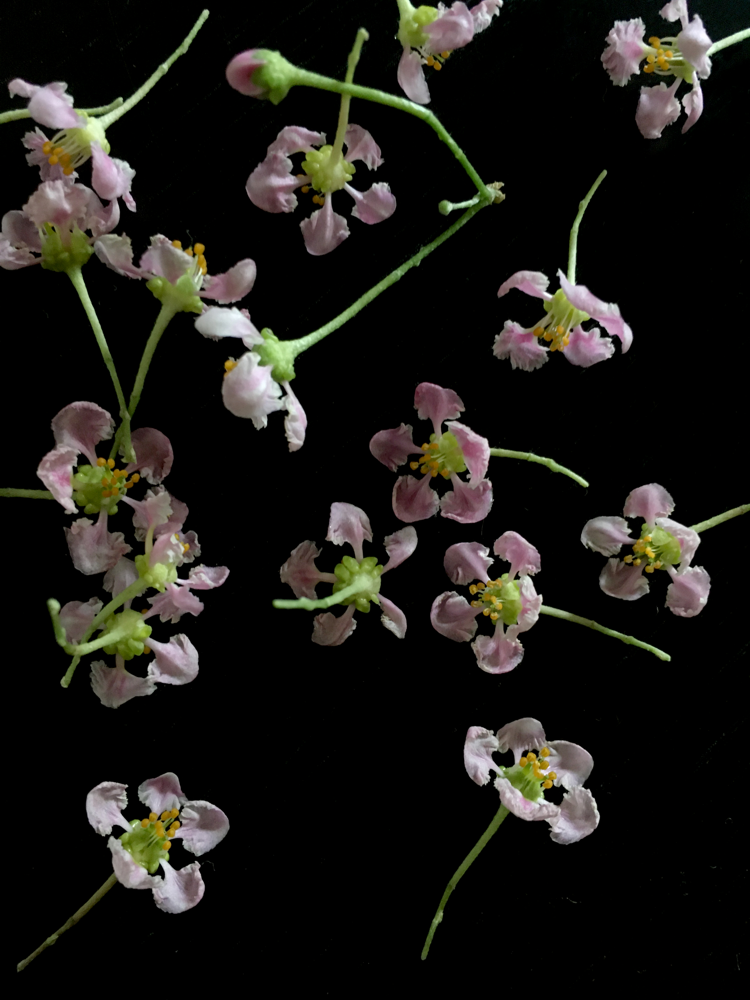

Sour Cherry
Make roughly 400 ml of Concentration
Ingredients
-
Cherry Concentration
- 400 ml of cherry juice, strained
- 300 g of sugar
- 20 g of lime juice
- 3-4 big pinches of salt
-
Serving
- Ice
- 25 ml of cherry concentration
- 200 ml of soda
“Mae ka1, are these Thai Cherries?” I shouted to my mother from the kitchen to the living room as I pitted and crushed the cherries and slowly drained them of their blood. The cherries I was referring to had been handpicked from our own garden just yesterday. Today, half were already spoilt—too black and blue; so bloated and fragile they could pop.

“Huh? They’re not.” My mother absentmindedly answered. She was busy packing and did not have time to entertain my sudden obsession with cherries. Our cherry tree had been in our garden forever. I'd played tag under it. I’d climbed it. I’d cried after getting bitten by its black garden ants. But, I hadn’t really paid any mind to it.
“Then what are they?” I probed, all the while still pitting, crushing and juicing.
Last year, after noticing again and again the accumulation of bruised, stomped, fallen cherries under the tree, I suddenly felt guilty. The Kills’ “Am I the only sour cherry on your food stand?” rang in my head. While I had been enjoying the imported sweet Bing cherries, I had been neglecting my own cherries and taking them for granted. To redeem myself, I promised to save the cherries.
“It’s not Thai cherry. Thai cherries mun lek gwa.” Thai cherries are smaller, my mother elaborated.
What are Thai cherries? A google search for Thai cherries in English will lead you nowhere. Only a search in Thai will turn out results. Thai cherries are scientifically known as Malpighia glare, and are commonly known as Barbados Cherries, Wild Crapemyrtle or Acerola. They are tropical ornamental shrubs native to the West Indies. Only in Thai, they are known as Thai cherries.
“Then who planted it? Did we plant it?” I was not going to let the matter drop.
“Of course, we did. Who else could it be? People called them Spanish cherries, but they are not Spanish cherries.” My mother said, irritated.
A brief search for Spanish cherries in Thai will also lead you to Barbados Cherries, Malpighia glare. Thai cherries are puzzlingly also known as Spanish cherries, but only in Thailand.
I finished the initial juicing, gathered the deflated remnants of my cherries into a cheesecloth and gave them one last squeezing before dumping them. Today’s batch of cherries—around 5 cups in total, yielded one and a quarter cups of juice. Typically, this same amount of cherries had been giving me less than half a cup. Monsoon cherries retain more liquid than cherries from other seasons do. I slowly stirred in some sugar, sprinkled a pinch of salt and added a squeeze of lime into the cherry juice. Too much lime would over power the cherry scent. Cherry juice by itself has a nice scent, but tastes quite bland. I prefer turning cherry juice into Loy-Gaew2 concentrate. Cherry concentrate can later be mixed with soda, resulting in a bubbly, rose-coloured drink.
The identity of my cherry tree remains a mystery to everyone in our family, even to my mother who planted it. My cherries are not completely round. They have ridges. They are not sweet, but tart. They are not dark red, but actually cherry red. They are not Bing, Rainier, Queen Anne, Montmorency or Morello. They are definitely not Marasca. Although I do not know what my cherries are, I know they should not be wasted, for they make one hell of a drink.
- "Mae" แม่ means mother while "Ka" คะ is an ending word used by women to suggest politeness. If you dragged the word just a bit with high tonation, "Kaa" ขา, it will increases the chances of you getting things your way by 40%. If you dragged it too much and too low, "Kaaaaaa" คา, then you're just being rude.
- "Loy Gaew" ลอยแก้ว refers to the Thai desserts for which sour fruits are soaked over night in syrups (with a tad bit of salt). Typically served chilled. You never, I repeat never, cook a "Loy Gaew" over heat. The moment you put it over heat, it becomes "Chuem" เชื่อม.
more stories